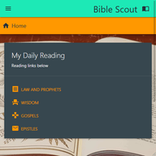

Bible Scout has been retired
Bible Scout was retired in November 2026 and no longer loads Bible text or audio.
Thank you to everyone who used it to read through the Scriptures. The Discipleship Journal Bible Reading Plan is still a great way to keep going.
The source code remains on GitHub.